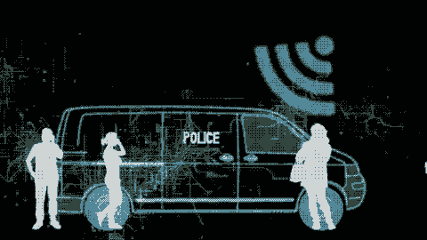

A.I IN SECURITY AND SURVAILANCE
My findings are as shown below
Questions and summarised answers
1. Give the possible problems of having low quality security in cyber security and how can improvement be met using A.I?
- Data loss which allows hackers to steal or corrupt data.
- Downtime caused by cyberattacks leads to less productivity.
- Noncompliance fines as low quality systems are against regulation of governing bodies.
- organisation will be seen as negligent and untrustworthy.
- Lawsuits from people whos information is leaked.
2. Why do we need A.I in security and surveillance?
- crime is rising in both the physical and digital world.
- It make it possible to detect and prevent crime both digitaly and real-life .
3. Will A.I in security and
surveillance
ruin employment opportunities for members of the country?
- NO ,A.I can only take us so far, businesses will still need guards to apprehend and install fear in criminals.
4. How has A.I improved
security
and surveillance?
- security systems can now recognize a person based on their weight, height, build and facial features.
- the technology can enhance pictures making blurry images clearer.
5. What would be the best way to distribute the information acquired ?
- The best way to distribute this information is through social media, news and newspapers .
6. How can security
and surveillance
interact with other A.I industries?
- An app connects the neighboorhood to each house security system so that if something happens the whole hood will know.
- Smart assistants like Siri can be connected to the security system informing you of things happening.
- Cyber security will help your virtual travel booking agent, so that you don’t get hacked.
7. How will improving A.I in
security
and surveillance benefit
society and the economy?
- low crime stats.
- criminal will be reluctant to commit their crimes .
- police will be able to track down criminals easier.
8. How can we ensure that
the benefits of AI in security
and surveillance
is distributed fairly?
- communities or gathering places can be informed about the future of security.
- assigning the task of distribution to a groups of people who come from different backgrounds.
9. How can AI in security
and surveillance be
used to optimize business processes or improve customer experiences?
- It will take off some pressure of the guards
- Make the customer and the workers feel safer.
10. Name the jobs A.I in surveillance provide?
- security officers (watch the surveillance)
- security system technicians (install and service security systems)
- cyber analyst (responsible for online safety and security)
- software engineer(make security software as well as upgrade it).
11. What types of challenges might be faced with the setup of A.I in
security and
surveillance?

Click for qustionnaire findings